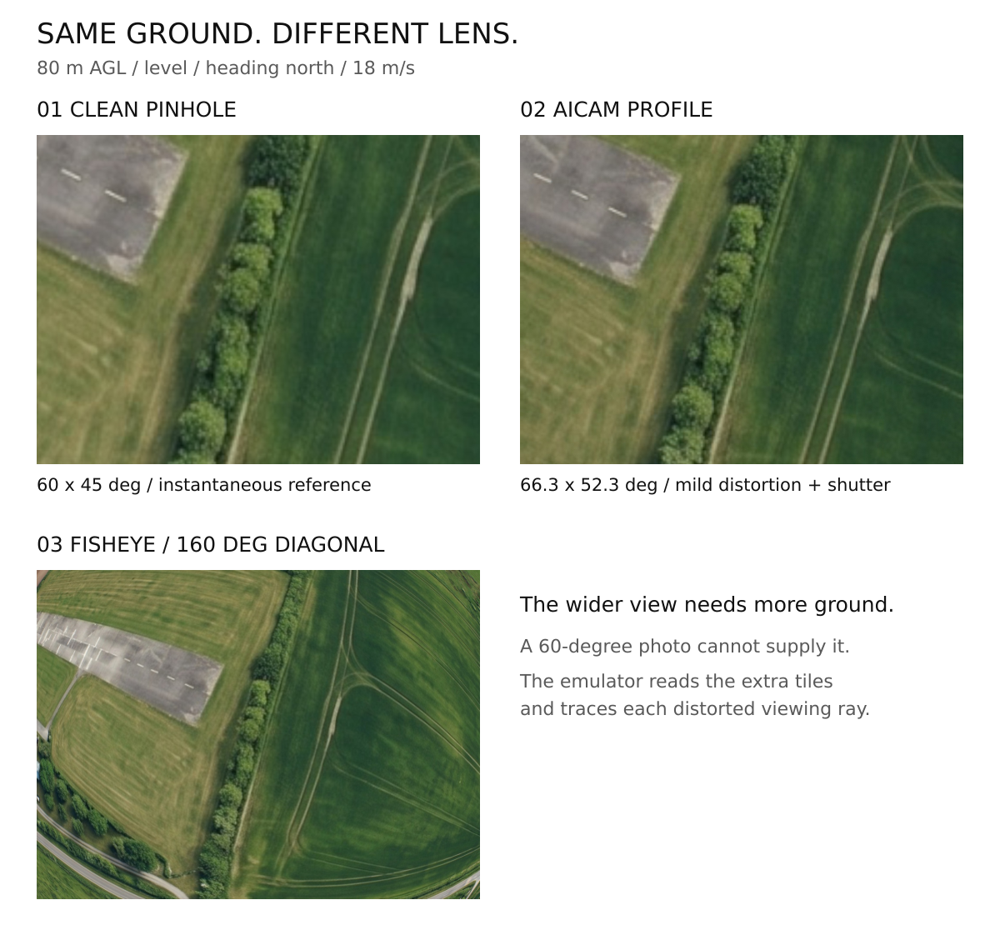
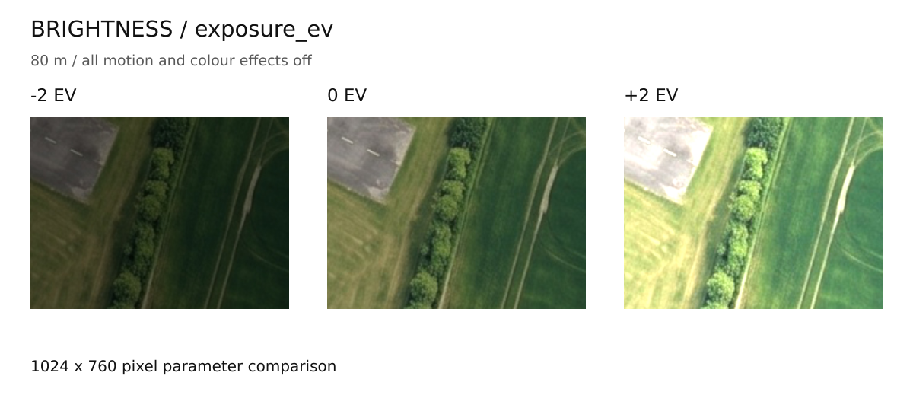
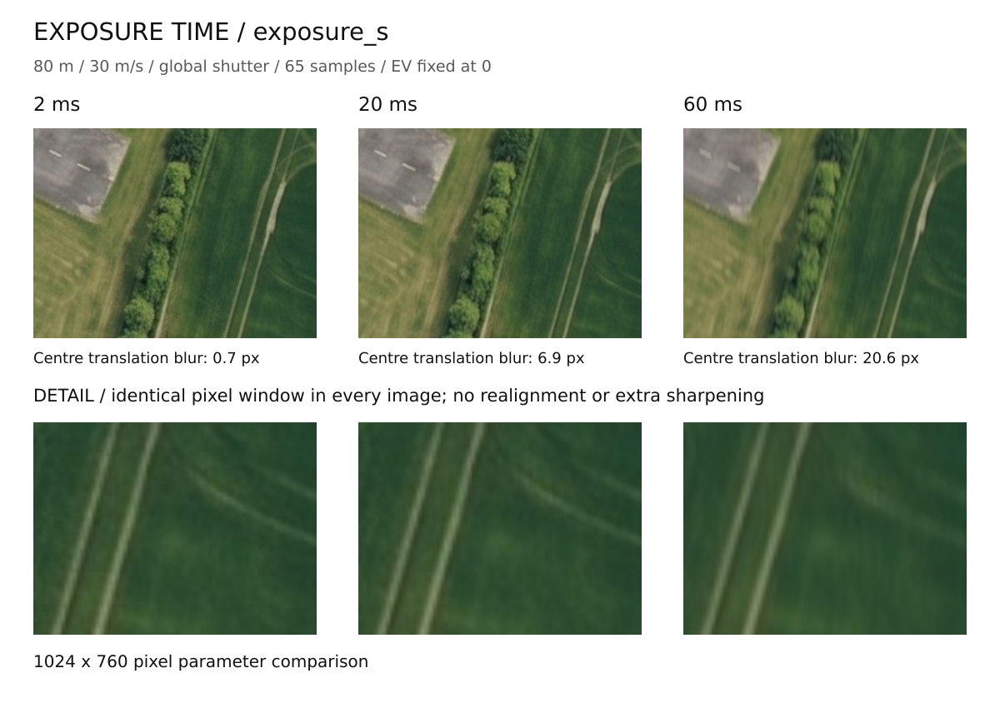
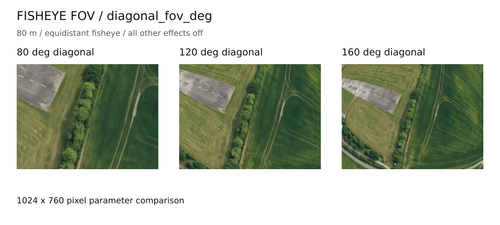

Try Different Lenses And Shutters¶
The lens emulator adds declared optical and exposure effects to supported MIMIC photographs. Use it to compare views, not to claim a physically calibrated camera. The original clean photo remains available.
MIMIC flight setup | Lens terms | LOOM flight camera selection

Run With USHER¶
Build on the PC, then start a local camera peer with a supplied profile:
make -j32 usher soda camera-lens
./usher --local --mock-map --debug --mock-lens ./bin/camera_lens_aicam.json
Connect your NPS aircraft using the MIMIC walkthrough, but do not also start a second session-managed USHER. Start with a single AIcam photo at a suitable simulated pose.
To try the wider fisheye profile, restart the peer using
bin/camera_lens_fisheye160.json. Its quoted 160 degrees is diagonal, not
horizontal. A wider view needs more cached surrounding imagery.
Compare The Two Images¶
For a clean capture such as ma000006.jpg, the processed companion is
ma000006.lens.jpg. Open both at the same scale. USHER selects the derivative
before AIcam/LOOM saved-image consumers: outbound LOOM reference links,
return-phase neural inference, and SODA all see the same processed photo,
only after successful emulation. Real hardware captures are unaffected.
| Image | Keep It For |
|---|---|
Original .jpg |
The clean camera view and available flight metadata |
.lens.jpg |
The declared optical/exposure experiment |
Check the current log and file time if processing fails. An old derivative left on disk is not a new successful result. Different profiles use the same derivative name, so save comparison copies before processing again.
Process A Saved MIMIC Photo¶
./bin/soda --local --aicam \
--lens-profile ./bin/camera_lens_aicam.json \
--lens-cache "$HOME/.local/share/paparazzi/pprzgcs/map" /absolute/path/ma000006.jpg
Use an original MIMIC photo with its metadata intact and the same suitable terrain cache. This does not take a new photo or change the aircraft's altitude.
Choose Effects Deliberately¶
Make a copy of a supplied JSON profile before changing it. Compare one effect at a time so you know what caused the difference.
For example, copy bin/camera_lens_aicam.json to your own my-lens.json.
Keep the other fields in this complete profile and change selected values;
do not replace it with an incomplete JSON fragment.
| Effect | What To Look For |
|---|---|
| Exposure/brightness | Lost shadow or highlight detail |
| Exposure duration and speed | Motion blur across the ground |
| Distortion or fisheye field of view | Bent lines and changed ground coverage |
| Chromatic aberration | Colour separation near edges |
| Vibration | Wobble and blur |
| Rolling shutter | Different row times causing geometric skew |
Which Settings Change The Picture?¶
| Profile Key | Meaning |
|---|---|
exposure_ev |
Brightness offset; 0 is the baseline |
exposure_s |
Exposure duration in seconds, not milliseconds |
motion_scale |
Scale of the aircraft-translation motion effect |
shutter |
global or rolling |
readout_s |
Time across rolling readout, separate from exposure duration |
vibration_deg, vibration_hz |
Angular vibration size and frequency |
samples |
Maximum temporal samples; actual count follows predicted image motion |
vignetting, optical_blur_px |
Residual corner shading and lens softness |
sensor_full_well_e, sensor_read_noise_e |
Effective shot/read noise after camera processing |
isp_sharpen |
Luma sharpening strength |
Keep brightness fixed and compare exposure_s values such as 0.002 and
0.02 with motion enabled. The result also depends on recorded speed and AGL:
a stationary view need not blur like a fast low pass. Restart the local peer
with --mock-lens /absolute/path/my-lens.json, or use that file with the
saved-photo command's --lens-profile.



The height used comes from the photograph's AGL information. Selecting an example profile does not make the simulated aircraft fly at that profile's example height. A transformed image cannot recover terrain outside the available source imagery.
Pi Zero 2 W Resource Baseline¶
The Raspberry Pi Zero 2 W is the 512 MB reference used when considering onboard resource limits; it is not the only board that can run Sensoraia. Begin these experiments on the PC. Large images, wide fisheye views and multiple temporal samples can be expensive. Check actual combined camera, analysis and operating-system use on the intended MORA board; a successful PC example is not an onboard throughput measurement.
Profile Reference¶
Profiles are JSON objects with "schema": "USHER_LENS_PROFILE_V1".
Unknown keys, nonfinite numbers, wrong types, and out-of-range values are
errors. Omitted optional keys use the defaults below. Copy a supplied profile
and edit it; validate before flying:
| Key | Units, accepted values, and default |
|---|---|
name, calibration |
Nonempty text, at most 160 characters; record the camera/mode and measurement provenance |
model |
brown (default) or fisheye |
horizontal_fov_deg, vertical_fov_deg |
Brown full field of view, 1..170 degrees; defaults 66.3, 52.3 |
diagonal_fov_deg |
Fisheye full diagonal field of view, 1..170 degrees; default 160 |
distortion |
Brown [k1,k2,p1,p2,k3] (five zeros by default), or fisheye [k1,k2,k3,k4]; each -2..2 |
output_width, output_height |
Both null/omitted (keep input dimensions), or both integers 2..4096; product at most 8,388,608 pixels |
chromatic_aberration |
Relative red/blue ray scaling, 0..0.01; default 0.0005 |
exposure_s |
Seconds, 0.000001..1; default 0.002 |
exposure_ev |
Relative exposure stops, -8..8; default 0 |
shutter |
rolling (default) or global |
readout_s |
Seconds across rolling readout, 0..0.2; default 0.02; must be positive for rolling shutter, ignored for global |
readout_direction |
top_to_bottom (default) or bottom_to_top |
motion_scale |
Ground-velocity multiplier, 0..10; default 1 |
angular_rate_deg_s |
Constant roll, pitch, yaw Euler rates, each -360..360 degrees/s; default [0,0,0] |
vibration_deg, vibration_hz |
Sinusoidal angular amplitude 0..5 degrees and frequency 0..1000 Hz; defaults 0.03, 80 |
vibration_phase_deg |
-360..360 degrees; default 0 |
samples |
Odd integer 1..65 maximum temporal samples; default 7; stationary cases use one. Moving cases target 0.5 px spacing, capped here; compare convergence for long exposures |
height_override_m |
null (default, use flight AGL), or 0.1..10000 metres; non-null requires a map cache |
jpeg_quality |
Integer 1..100; default 95; lossy JPEG encoding follows rendering |
vignetting |
Residual linear-light loss at a corner, 0..0.95; default 0 (off); cos-fourth falloff shape |
optical_blur_px |
Gaussian optical blur sigma in output pixels, 0..5; default 0 (off), applied in linear light |
sensor_full_well_e |
Effective full-well electrons, 10..1,000,000, or 0 (default, noise off). Controls Gaussian shot-noise approximation, not a measured RAW sensor capacity |
sensor_read_noise_e |
Effective RMS read noise in electrons, 0..100; default 0; positive values require full well enabled |
isp_sharpen |
Luma-only unsharp-mask amount, 0..3; default 0 (off); fixed 1 px Gaussian radius |
max_tiles |
Integer 1..225 for the complete projected tile rectangle; default 121 |
threads |
Integer 1..32 requested workers; default 4, further restricted by available resources |
memory_budget_mb |
Integer 96..1024 MiB working-set budget; default 192, further restricted by available resources |
f_number |
0.5..64, default 1.79; metadata only, not a depth-of-field/diffraction model |
focal_length_mm |
null (default) or 0.1..1000 mm; metadata only; projection uses field of view |
Calibration coefficients follow OpenCV Brown and fisheye conventions. Projection assumes a centred principal point and a fixed nadir mount. Calibrate the lens, crop, and saved-image mode together; the stock AI Camera profile's nominal field of view does not measure distortion, readout, or aircraft vibration. The profile JSON is not a PANGEA camera INI or an ONNX assignment.
Realism Boundary¶
The renderer integrates motion/exposure in linearized sRGB and then re-encodes JPEG. Time zero is the shot pose at the centre row's mid-exposure. Translation uses the photo's speed/course/AGL; angular rates and sinusoidal vibration are configured, not inferred from neighbouring IMU samples. Brightness is relative EV, not sensor RAW radiometry. Optional residual shading, Gaussian optical softness, signal-dependent shot/read noise, sRGB encoding and luma sharpening approximate the saved camera JPEG, not the actual Bayer sensor/libcamera ISP. Noise is deterministic for the same effective profile and shot metadata, independent of worker count; changed shot metadata changes the seed. Saturated highlights clip. No autoexposure, automatic white balance, Bayer demosaicing, spatial denoising, physical depth of field, weather, buildings, or terrain-height reconstruction is included. The cache itself already contains an aerial image's imaging/compression effects.
Use paired captures and held-out real-flight JPEGs to validate geometry, ground sampling, blur, shutter skew, colour, compression, and model performance. An attractive simulated photo is not evidence that the neural-network domain gap is closed. Preserve the effective profile and its EXIF SHA-256 with results.
Calibrate Against Real Captures¶
The supplied AIcam profile matches USHER's saved 2028x1520, quality 90, 4:2:0 JPEG format (see the AIcam capture guide). Its optical distortion, readout, noise and ISP values are nominal, not measurements. No real AIcam flight-photo calibration is supplied.
- Collect real photos in the actual capture mode, with representative lighting, speed, height and terrain. Keep a separate held-out flight.
- Calibrate FOV/distortion using OpenCV camera calibration. Measure rolling readout, exposure and vibration independently; photo statistics alone cannot recover them.
- Generate matching simulated views and compare batches:
./bin/camera_lens --measure /data/real-flight/*.jpg > /tmp/real-camera.json
./bin/camera_lens --measure /data/sim-flight/*.lens.jpg > /tmp/sim-camera.json
This works on ordinary JPEGs without MIMIC EXIF. JSON contains per-file
values and medians: dimensions, estimated IJG JPEG quality, luma mean and
1st/99th percentiles (0..255), flat-region noise sigma (luma levels),
Laplacian variance (detail), corner/centre luma ratio, and R/G and B/G.
jpeg_table_error=0 means an exact standard IJG luma quantization table;
vendor tables give an approximation. Colour subsampling is reported per file.
Saturated-only images without usable noise samples are explicitly rejected.
Undefined ratios are null and excluded from their batch median.
4. Tune optical_blur_px and isp_sharpen for detail, then effective full
well/read noise for flat-region grain, vignetting for residual shading,
and exposure_ev/jpeg_quality for brightness/compression. Higher full well
reduces noise. Disable each optional effect with 0. To disable the whole
emulator in LOOM use
LOOM_CAMERA_PROFILE=none.
5. Record the camera mode, conditions, measurements and date in calibration.
Validate the profile, restart with fresh LOOM references, and evaluate
held-out real-flight neural results before calling the profile representative.
Noise, sharpness, colour and corner ratios are scene-dependent diagnostics, not automatic calibration or proof of a domain match. Use comparable terrain and uniform targets for shading/noise; avoid fitting texture as sensor noise. White-balance differences require matching the real capture/model preprocessing; this profile does not provide a colour-calibration matrix.
Performance and Validation¶
Rendering uses bounded strips and a bounded tile cache. A nonblocking job lock prevents concurrent renderers from multiplying their working sets. The budget is a conservative renderer estimate, not a whole-system RAM guarantee. No Python runtime is required for emulation or LOOM inference.
Each successful render prints elapsed_s, process_peak_rss_kib,
effective_threads, effective_samples, estimated_peak_bytes, and
center_translation_blur_px_level_estimate. exposure_blur_px_max estimates
motion from nine image probes; ray_grid_step_px and
ray_interpolation_error_px report the green/reference channel's node spacing
and maximum cell-centre forward-reprojection residual.
Each colour grid halves its spacing until that residual is at most 0.02 px,
or uses exact per-pixel inversion. This is a sampled accuracy check, not a
mathematical bound everywhere.
Measure at the actual JPEG
resolution, flight AGL, speed, and widest required view. In LOOM, rendering
finishes before reference admission/inference; slow rendering can reduce the
3-second flight-plan photo cadence. The shared launcher cancels on owner
shutdown or after 90 seconds; this limit does not promise real-time operation.
On the development PC, the supplied full-effect AIcam profile rendered a
2028x1520 clean MIMIC source into a 2028x1520 q90 JPEG in 0.13..0.14 s
(warm-cache runs including EXIF and fsync, eight workers, about 77 MiB peak
process RSS). The 160-degree fisheye profile (spanning 35 zoom-18 tiles) took
0.16..0.18 s at 2028x1520 with about 79 MiB peak process RSS.
Both used five effective exposure samples; the AIcam reference-grid residual
was 0.0161 px. These are renderer-only host measurements on cached real aerial
tiles, not complete flight-cadence, MORA, or real-camera accuracy guarantees.
Reduce temporal samples (odd values only) after checking convergence, or
disable unneeded chromatic aberration to avoid three independent colour-ray
passes. Do not lower resolution or remove measured effects solely to obtain a
favourable timing number. Keep enough cached terrain for the entire distorted,
moving footprint; missing imagery fails rather than filling neural inputs
with invented terrain.
When Emulation Fails¶
Check that the source is a supported clean MIMIC photo, the profile parses, its pose/height information is available, and the cache covers the wider view. Read SODA's error rather than assuming the clean image was used as a quiet fallback. Preserve the original while adjusting the profile.